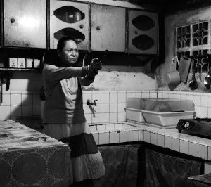

Ang Babaeng Humayo
The Woman Who Left

Lav DiazPH 2016 – 228 min – Tagalog
Goldener Löwe, Venedig 2016
B+K+S: Lav Diaz – P: Ronald
Arguelles, Lav Diaz – V: Grandfilm – Mit Charo Santos-Concio, John Lloyd Cruz, Michael De Mesa, Nonie Buencamino
Geschichte
von einer, die Rache nimmt. Dreißig Jahre saß Horacia
unschuldig im Gefängnis, während ihr weniger unschuldiger Lover
das Leben genoss und zu Geld kam. Der Film spielt in Cavite, wo
1897 der philippinische Nationalheld Bonifacio verraten wurde
und die Philippinen ihre Unabhängigkeit erklärten. Frei nach
Tolstois Legende „Gott sieht die Wahrheit, auch wenn Er
jahrelang schweigt“, vom Meister des Slow Cinema.
sonntag 8 okt 18.30 uhr filmmuseum münchen
Lav Diaz * 1958 in Cotabo / Philippinen. Lebt und arbeitet auf den Philippinen. In den frühen 90er Jahren ging Diaz in die USA und arbeitete dort als Journalist.
Parallel dazu begann er als Drehbuchautor zu arbeiten und sein erstes Opus magnum BATANG WEST SIDE zu drehen. Diaz gehört zu den international erfolgreichsten philippinischen Independent-Regisseuren. Seine Filme über die philippinische „Seele“ gewannen zahlreiche Preise auf den großen A-Festivals.
UNDERDOX zeigt seit dem ersten Jahr seine überlangen Filme, die in den letzten Jahren mit dem Label „Slow Cinema“ versehen wurden.
Filme Batang West Side 2002 – Evolution of a Filipino Family 2004 – (1. UX) – Heremias 2006 – Melancholia 2008 – Butterflies Have No Memories 2009 (5. UX) Norte, The End of the History 2013 (8. UX) – From What is Before 2014 (9. UX) – A Lullaby to the Sorrowful Mystery 2016 (11. UX)